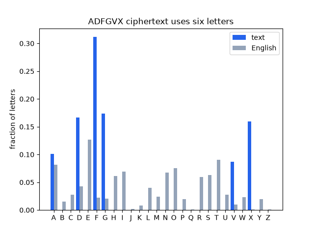

Note
Go to the end to download the full example code or to run this example in your browser via JupyterLite.
Fractionation and transposition (ADFGVX, 1918)#
The German army’s ADFGVX cipher split each character into two coordinates in a 6 by 6 square, written with the letters A, D, F, G, V and X, then transposed the coordinates by a keyword. A single character’s two halves end up far apart. Georges Painvin broke it in June 1918 from messages with similar beginnings.
Encrypt a message, check the fractionation by hand, see how the ciphertext uses only six letters, and break a long message whose keyword length is known.
import matplotlib.pyplot as plt
import cybersecuritykit as csk
from cybersecuritykit.classical import visualizers
Fractionation by hand#
A sits in row D, column G of this square, so a one-letter message gives DG.
P H 0 Q G 6
4 M E A 1 Y
L 2 N O F D
X K R 3 C V
S 5 Z W 7 B
J 9 U T I 8
Then transposition by the keyword#
ciphertext = csk.classical.adfgvx_encrypt("attack at 1200am", square, "GERMAN")
print(ciphertext)
assert set(ciphertext) <= set("ADFGVX")
assert csk.classical.adfgvx_decrypt(ciphertext, square, "GERMAN") == "ATTACKAT1200AM"
long_message = (
"the second army will advance on the river at 0500 and hold the bridge until relieved"
)
long_ciphertext = csk.classical.adfgvx_encrypt(long_message, square, "GERMAN")
ax = visualizers.plot_letter_frequencies(long_ciphertext)
ax.set_title("ADFGVX ciphertext uses six letters")
plt.show()

XGDAGGGDGDDDFDGVGFDGDVFXGXAD
Undoing the transposition, then the substitution#
Under the right column order every pair of the stream is one plaintext symbol, so pairs repeat as often as English letters and their index of coincidence peaks. Trying all 120 orders of a five-letter keyword finds it; the pairs are then an ordinary substitution cipher. Painvin had no computer and lined up several messages sent with the same key instead.
text = " ".join(csk.classical.utils.english.CORPUS.split()[:120])
secret = csk.classical.adfgvx_encrypt(text, square, "CARGO")
broken = csk.classical.break_adfgvx(secret, 5)
print(broken.order, broken.plaintext[:60], f"({broken.tested} candidates scored)")
assert broken.order == (1, 0, 3, 4, 2)
assert broken.plaintext.startswith("THEHARBOURWASQUIET")
(1, 0, 3, 4, 2) THEHARBOURWASQUIETINTHEEARLYMORNINGWHENTHEFISHINGBOATSCAMEBA (52070 candidates scored)
Exercise#
Encrypt two messages that start with the same ten characters under the same keyword. Which parts of the ciphertexts still agree, and how does that help recover the keyword length?
Total running time of the script: (0 minutes 0.472 seconds)